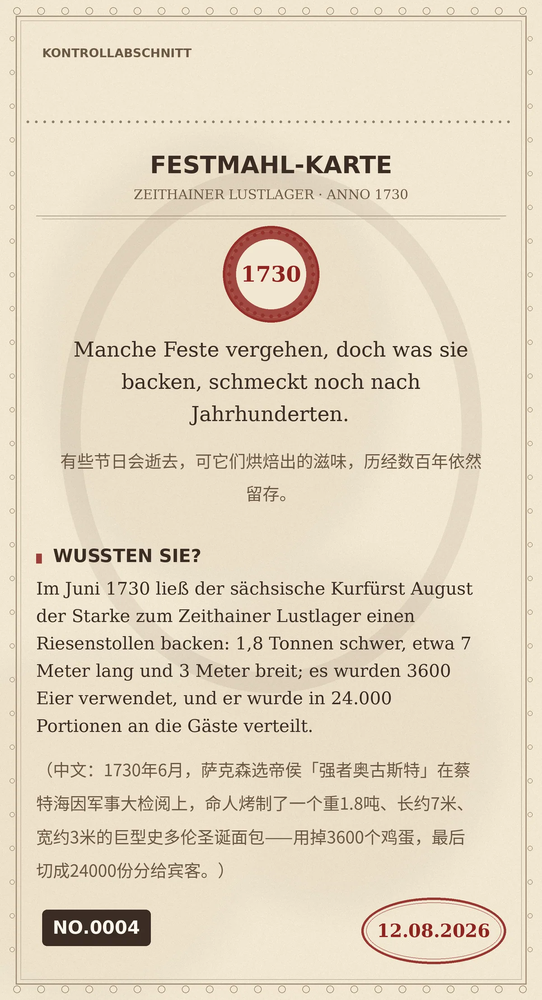

Manche Feste vergehen, doch was sie backen, schmeckt noch nach Jahrhunderten.
Im Juni 1730 ließ der sächsische Kurfürst August der Starke zum Zeithainer Lustlager einen Riesenstollen backen: 1,8 Tonnen schwer, etwa 7 Meter lang und 3 Meter breit; es wurden 3600 Eier verwendet, und er wurde in 24.000 Portionen an die Gäste verteilt. （中文：1730年6月，萨克森选帝侯「强者奥古斯特」在蔡特海因军事大检阅上，命人烤制了一个重1.8吨、长约7米、宽约3米的巨型史多伦圣诞面包——用掉3600个鸡蛋，最后切成24000份分给宾客。）